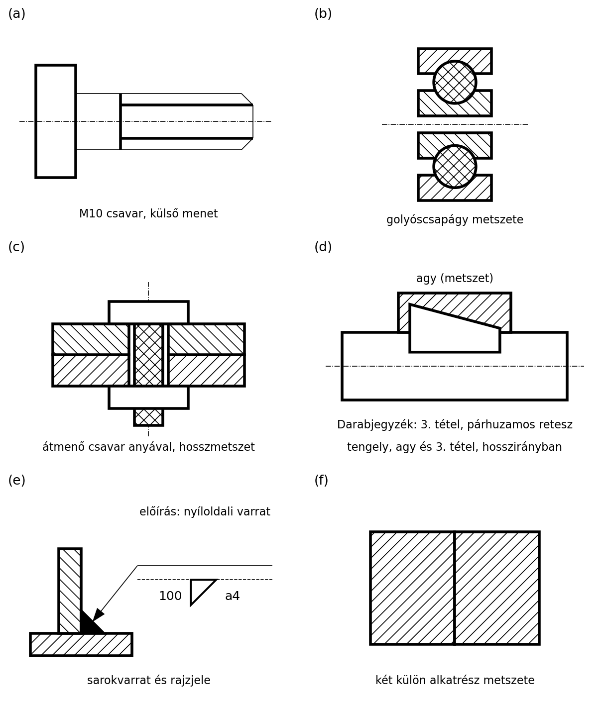
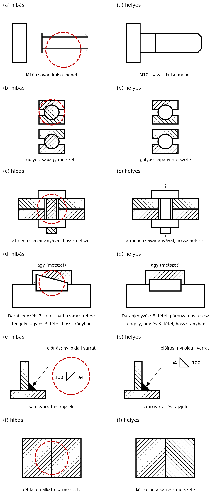

A kapcsolódó elmélet: tankönyv, 11.3 alfejezet.
1. feladat (A) Mit jelent az M10 × 30 csavarjelölés? Milyen rajzi vonalakkal ábrázolnád a csavar menetes részét?
2. feladat (A) Sorold fel, hogy a felsoroltak közül melyik oldható és melyik nem oldható kötés: csavarkötés, hegesztés, reteszkötés, forrasztás, bordáskötés, csapszeges kötés, szegecskötés, ékkötés.
3. feladat (B) Egy tengely-agy kapcsolat rajzán a tengelyben egy hosszú, téglalap alakú hornyot, az agyban ugyanilyen hosszú hornyot látsz, és egy téglalap keresztmetszetű elemet a kettő között. Mi ez az elem, és mi a funkciója? Rajzold le a metszetet szövegesen: milyen vonalakat használnál?
4. feladat (B) Egy hegesztési varrat jelölése: a vonatkozási vonal folytonos oldalán derékszögű háromszög alapjel van, tőle balra „a5”, jobbra „100” (a5 ◺ 100). Mit jelent ez a jelölés?
5. feladat (C) Egy villanymotor tengelyének rajzán a csapágy jele: két koncentrikus kör, közöttük egy sor kis kör. A csapágy mellett a tételszám „6204”. Milyen típusú csapágy ez? Milyen alkatrészeket jelölnek a körök? Miért fontos a beépítési irány?
6. feladat (D) Egy kapcsolószekrény keretén hegesztési varratokat kell ellenőrizni. A tervrajzon a varrat jele: háromszög alapjel, tőle balra „a4”, a nyílvonal és a vonatkozási vonal találkozásánál kör (kerületi varrat). Magyarázd el, mit kell mérni és ellenőrizni a helyszínen a rajz alapján.
7. feladat (B) A gyűjtősín-csatlakozás darabjegyzékében a 4. tétel: hatlapfejű csavar M10 × 30-8.8. Mit jelent a három adat? Melyik alkatrész kerül közvetlenül a sín alá, és miért?
8. feladat (B) M6-os menetet kell vágnod a szerelőlapba. Mekkora fúrót választasz, és milyen kulcs kell a hatlapfejű csavarhoz?
9. feladat (A) Mit jelent a csavarfejen az „A4-80” felirat?
Az alábbi hat panel mindegyike egy-egy hibát tartalmaz. Nevezd meg mindegyik panelen a hibát és a helyes ábrázolást! Előbb próbáld meg egyedül; a megoldólap a Megoldások végén található.

Önellenőrzés – válaszok
1. feladat megoldása. Az M10 × 30 csavarjelölés: metrikus menet, névleges átmérő 10 mm, hasznos csavarhossz 30 mm. A menetes rész ábrázolása: a külső átmérőt vastag folytonos vonallal, a magátmérőt vékony folytonos vonallal rajzoljuk, a menet végét ferde vékony vonallal zárjuk le, ha a menet nem fut ki.
2. feladat megoldása. Oldható: csavarkötés, reteszkötés, bordáskötés, csapszeges kötés, ékkötés. Nem oldható: hegesztés, forrasztás, szegecskötés. (A forrasztás és ragasztás is nem oldható, de a forrasztás speciális esetben oldható lehet; a gyakorlatban nem oldhatóként kezeljük.)
3. feladat megoldása. Ez reteszkötés: a tengelybe mart reteszhoronyba és az agyba készített reteszhoronyba egy párhuzamos reteszt helyeznek, amely nyomatékot visz át. A metszet ábrázolása: a tengelyt és az agyat vonalkázzuk, a reteszt metszetben téglalapként rajzoljuk, a hornyok falát és a retesz körvonalát vastag folytonos vonallal. Keresztmetszetben (tengely–agy metszet) a tengely, az agy és a retesz is vonalkázott, egymástól eltérő irányú vagy sűrűségű sraffozással; hosszmetszetben a reteszt nem metsszük (ellenőrizendő: MSZ EN ISO 128 metszeti szabályai).
4. feladat megoldása. A háromszög sarokvarratot jelent; az alapjel bal oldalán az „a5” a gyökméretet (5 mm), jobb oldalán a „100” a varrat hosszát (100 mm) adja; mivel az alapjel a vonatkozási vonal folytonos oldalán van, a varrat a nyíl oldalán fut. Tehát a varrat egy 5 mm gyökméretű sarokvarrat, 100 mm hosszban, a nyíl oldalán (ellenőrizendő: MSZ EN ISO 2553).
5. feladat megoldása. Ez egy egysoros golyóscsapágy. A külső kör a külső gyűrű, a belső kör a belső gyűrű, a kis körök a golyók. A „6204” a csapágy típusjelölése. A beépítési irány azért fontos, mert a csapágy egyes típusai (például a ferde hatásvonalú golyóscsapágy) nem szimmetrikusak, és a helytelen beépítés tönkremenetelhez vezet; egysoros golyóscsapágynál az irány általában mindegy, de a szerelésnél a gyűrűk illesztését kell betartani.
6. feladat megoldása. A rajz szerint a varrat 4 mm gyökméretű („a4”) sarokvarrat, a teljes kerület mentén (a kör körbefutó varratot jelent, ezért külön hossz nincs megadva). A helyszínen ellenőrizni kell: a varrat ténylegesen a teljes kerület mentén, a sarokban van-e és folytonos-e; a gyökméretet (a varratba írható legnagyobb egyenlő szárú háromszög magassága) varratméret-sablonnal vagy -mérővel meg kell mérni, és 4 mm-nek kell lennie. A varrat felületén repedés, széli beégés (bemetszés), gyökoldali kötéshiány vagy be nem olvadás nem megengedett.
7. feladat megoldása. M10: metrikus menet, 10 mm névleges (külső) átmérő; 30: a csavar hossza 30 mm (hatlapfejű csavarnál a fej alatti hossz); 8.8: szilárdsági osztály (szakítószilárdság ≈ 8 × 100 = 800 N/mm², folyáshatár ≈ 0,8 × 800 = 640 N/mm²; ellenőrizendő: MSZ EN ISO 898-1). A sín alá a tányérrugós alátét (5) kerül, utána az anya (7): a rugalmas alátét pótolja a réz kúszásából és a hőciklusokból adódó lazulást, így a kötés előfeszítése megmarad.
8. feladat megoldása. Az előfúró átmérője 5,0 mm (ökölszabály: ); a hatlapfejű M6-os csavarhoz 10-es villáskulcs (vagy dugókulcs) kell.
9. feladat megoldása. A4: saválló (ausztenites, molibdén-ötvözésű) rozsdamentes acél; 80: a szakítószilárdság (ellenőrizendő: ISO 3506).
Rajzolvasási hibakereső feladat – megoldás.

Példa. Egy szerelési rajzon az látszik, hogy a motor fedelét négy M8 × 20 csavar rögzíti, mindegyik alatt rugós alátét. A rajz alapján egyértelmű: a fedél oldható, a csavarokat el kell távolítani a bontáshoz, a rugós alátéteket pedig a visszaszereléskor ki kell cserélni, ha ellapultak.
Példa: gyűjtősín-csatlakozás. Az alábbi összeállítási rajz egy rézsínre csatlakozó kábelsarut és a sín rögzítését mutatja robbantott és összeállított nézetben, nyolc tételszámmal:
| Tétel | Megnevezés | Darab | Anyag / szabvány / típus | Megjegyzés |
|---|---|---|---|---|
| 1 | gyűjtősín 30 × 5 | 1 | réz, Cu-ETP | furatok: Ø11 (M10), Ø9 (M8) |
| 2 | támszigetelő | 1 | műanyag, M8 menetes betéttel | ld. a szigetelőanyagok alfejezetét |
| 3 | kábelsaru 50 mm² | 1 | ónozott réz, M10 furat | préselt (ellenőrizendő: gyártói adat) |
| 4 | hatlapfejű csavar M10 × 30 | 1 | acél, 8.8, horganyzott | |
| 5 | kúpos tányérrugós alátét 10 | 1 | rugóacél (DIN 6796 jellegű, ellenőrizendő) | a domború oldal a sín felé |
| 6 | lapos alátét 10 | 1 | acél, horganyzott | |
| 7 | hatlapú anya M10 | 1 | acél, 8-as szilárdsági osztály | |
| 8 | hatlapfejű csavar M8 × 20 | 1 | acél, 8.8, horganyzott | a sín rögzítése a 2. tételhez |
Példa. Egy motor tengelyének rajzán a csapágy rajza: két koncentrikus kör (külső és belső gyűrű), közöttük egy sor kis kör (golyók). Ez egy egysoros golyóscsapágy. A tengelyre illesztett belső gyűrű, a házba illesztett külső gyűrű látható. A szerelésnél a csapágyat a jelölés szerint kell beépíteni.
Példa. Egy szivattyú hajtásánál a motor tengelye és a szivattyú tengelye közé rugalmas tengelykapcsoló van. A rajzon a két tengelyvég között egy hengeres gumibetét látható, a kapcsolófeleket csavarok rögzítik. A szerelő a rajz alapján tudja, hogy a kapcsoló szét- és összeszerelhető, és a gumibetét kopás esetén cserélhető.
Példa. Egy kapcsolószekrény acél keretének rajzán a sarokvarrat jele: a nyílvonal a sarokba mutat, a háromszög alapjel a vonatkozási vonal folytonos oldalán van, tőle balra „a4” (4 mm gyökméret), a nyílvonal és a vonatkozási vonal találkozásánál kör (kerületi varrat). Ez azt jelenti: a két lemez sarkát 4 mm gyökméretű sarokvarrattal, a teljes kerület mentén, műhelyben kell hegeszteni.